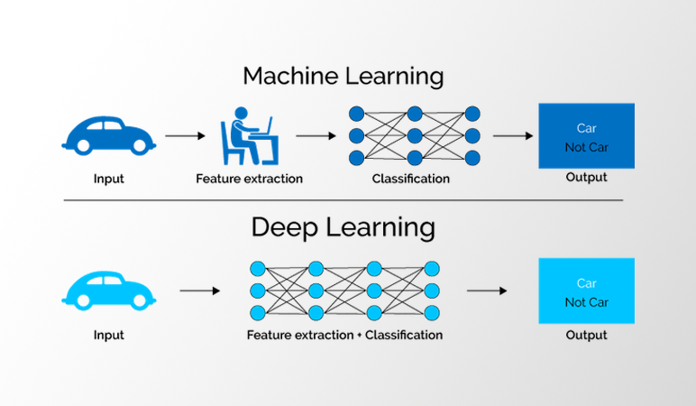

AI VÀ MACHINE LEARNING(MÁY HỌC) TRONG LẬP TRÌNH
TP.HCM, Sep 2, 2024
AI và Machine Learning đang là xu hướng phát triển mạnh mẽ trong ngành công nghệ thông tin. Với khả năng học
hỏi từ dữ
liệu và đưa ra các dự đoán, các hệ thống AI đã và đang thay đổi cách chúng ta tương tác với công nghệ.
Chắc hẳn ai cũng đều đã từng nghe qua khái niệm Trí tuệ nhân tạo hay AI, Machine Learning, Deep Learning rồi
phải không nào. Những khái niệm tưởng chừng đơn giản nhưng lại khá nhập nhằng và dễ khiến người ta nhầm lẫn.
- AI - Trí tuệ nhân tạo được coi là trí tuệ của con người được mô phỏng và sử dụng bởi máy móc.
- Trong khi đó Machine Learning là một phương pháp để chinh phục AI, giúp máy có thể mô phỏng được trí tuệ đó
- Cuối cùng,Deep Learninglà một kỹ thuật để hiện thực hóa Machine Learning
Machine Learning
Là một lĩnh vực con của AI sử dụng các thuật toán cho phép máy tính có thể học từ dữ liệu để thực hiện
các công việc thay vì được lập trình một cách rõ ràng.
Nó có khả năng tự học hỏi dựa trên dữ liệu đưa vào
mà không cần phải được lập trình cụ thể.
Các ví dụ trong tập huấn luyện thường có một tập thuộc tính/ đặc trưng cố định. Đó là những thể hiện để mô tả
về đối tượng đó. Như trong VD1, đặc trưng có thể là tần suất các màu của mỗi bức ảnh. Trong VD2, các đặc trưng
một review sẽ là các từ tạo nên review đó. Còn VD3, các đặc trưng có thể là tuổi tác, công việc, mức lương của
mỗi người,…
Cách hoạt động
Một cỗ máy thực hiện chơi cờ(nhiệm vụ T), có thể học từ dữ liệu các ván cờ
trước đó hoặc chơi với một chuyên gia(kinh nghiệm E). Khả năng chơi của cỗ máy là tỉ lệ số ván mà nó chiến
thắng khi chơi với con người(hiệu suất P).Mức độ bảo mật thông tin cao, an toàn thông tin cho khách hàng
Lựa chọn các đặc trưng thích hợp là một nhiệm vụ quan trọng trong Machine learning. Chúng ta sẽ tiếp tục làm
rõ điều này ở phần phía sau mục này.
- Mạng thần kinh( Neural Networks): Mạng thần kinh mô phỏng cách thức hoạt động của bộ não con người với vô số các nút xử lý được liên kết. Mạng thần kinh rất hiệu quả trong việc nhận dạng các mẫu và đóng vai trò quan trọng trong ứng dụng như: dịch ngôn ngữ tự nhiên, nhận dạng hình ảnh, giọng nói hay tạo hình ảnh.
- Hồi quy tuyến tính (linear regression): Thuật toán này được sử dụng để dự đoán các giá trị số, dựa trên mối quan hệ tuyến tính giữa các giá trị khác nhau. Ví dụ: kỹ thuật này có thể được sử dụng để dự đoán giá nhà dựa trên lịch sử của khu vực.
- Hồi quy logistics : Thuật toán học có giám sát này đưa ra dự đoán cho các biến phản hồi phân loại (câu trả lời có/không). Nó có thể được sử dụng cho các ứng dụng như phân loại thư rác và kiểm soát chất lượng trên dây chuyền sản xuất.
- Phân cụm(Kmeans): Các thuật toán phân cụm có thể xác định các mẫu trong dữ liệu để có thể nhóm chúng lại. Máy tính có thể giúp các nhà khoa học dữ liệu bằng cách xác định sự khác biệt giữa mục dữ liệu bị bỏ qua.
- Decision trees : Thuật toán được sử dụng cho cả dự đoán hồi quy và phân loại dữ liệu thành các mục. Decision trees sử dụng một chuỗi phân nhánh của các quyết định được liên kết có thể biểu diễn bằng sơ đồ cây. Một trong những ưu điểm của thuật toán này là chúng dễ dàng xác thực và kiểm toán.
- Random forests: Thuật toán học máy dự đoán một giá trị hoặc danh mục bằng cách kết hợp các kết quả từ một số decision trees.
Deep Learning
Là một phương pháp của Machine learning,Cho phép chúng ta huấn luyện một AI có
thể dự đoán được các đầu ra dựa vào một tập các đầu vào.Giúp máy tính giải quyết một loạt các vấn đề phức tạp
không thể giải quyết được.Nó như là một “mạng thần kinh – neural networks” có thể xử lý dữ liệu tương tự như
một bộ não con người có thể thực hiện mà trong đó máy tự đào tạo chính nó.Đòi hỏi rất nhiều dữ liệu đầu vào và
sức mạnh tính toán.

Ưu nhược điểm học sâu (deep learning)
- Cấu trúc neural networks linh hoạt, dễ dàng thay đổi để phù hợp với nhiều thuật toán khác nhau.
- Có khả năng giải nhiều vấn đề phức tạp với độ chính xác rất cao.
- Khả năng tự động hóa cao, tự điều chỉnh và tự tối ưu hóa.
Bên cạnh ưu điểm, Deep Learning vẫn còn tồn tại nhiều hạn chế:
- Không có nền tảng lý thuyết vững chắc để chọn các công cụ tối ưu cho Deep Learning.
- Chi phí tính toán cao vì phải xử lý nhiều mô hình phức tạp.
- Cần khối lượng dữ liệu khổng lồ để khai thác tối đa khả năng của Deep Learning.
Ứng dụng thực tiễn của Deep Learning
Phân tích cảm xúc
Đây là lĩnh vực phân tích cảm xúc của con người thông qua xử lý ngôn ngữ tự
nhiên, phân tích văn bản và thống kê. Doanh nghiệp có thể ứng dụng Deep Learning để hiểu và phán đoán cảm xúc
của khách hàng dựa trên các đánh giá, bình luận, feedback… từ đó đưa ra các chiến lược kinh doanh, marketing
phù hợp với từng phân khúc khách hàng.
Trợ lý ảo - virtual assistant
Trợ lý ảo đang được ứng dụng rất nhiều trong cuộc sống hàng ngày. Trong đó phổ biến phải kể đến
chatbot, Google Assistant, Cortana. Siri,... Các trợ lý này được xây dựng dựa trên mô hình Deep Learning với
các thuật toán giúp nhận dạng và xử lý dữ liệu như giọng nói, văn bản…


- Sự can thiệp con người
Điểm khác biệt đầu tiên giữa machine learning và deep learning là về sự can thiệp của con người. Machine learning đòi hỏi sự can thiệp của con người trong quá trình thực hiện nhiệm vụ để đạt được kết quả tốt hơn. Trong khi đó thì deep learning lại có thuật toán phức tạp hơn nhưng lại ít có sự can thiệp của con người hơn. - Phần cứng
Các chương trình machine learning có thuật toán ít phức tạp hơn deep learning và thường có thể chạy dễ dàng trên máy tính thông thường. Deep learning thì đòi hỏi công cụ, tài nguyên và phần cứng phải mạnh hơn rất nhiều thì mới hoạt động được. - Thời gian
Điểm khác biệt giữa machine learning và deep learning có thể dễ thấy nhất khi làm là các hệ thống machine learning có thể thiết lập và vận hành nhanh chóng, tuy nhiên thì kết quả sẽ bị chậm. Deep learning lại khác, hệ thống deep learning sẽ mất nhiều thời gian để thiết lập nhưng mang lại kết quả ngay tức thì. - Cách tiếp cận
Deep learning yêu cầu nhiều dữ liệu thuật toán hơn machine learning truyền thống để có thể hoạt động bình thường. Machine learning có hàng nghìn điểm dữ liệu nhưng deep learning có đến hàng triệu điểm. Deep learning có cấu trúc và hệ thống phức tạp nên cần có dữ liệu lớn để loại bỏ các biến động và đưa ra cách giải quyết tốt nhất